<nav class="flex items-center justify-center gap-6 p-6">
	<a href="index.html" class="flex-shrink-0 basis-64">
		
	</a>
	<div class="flex flex-grow flex-wrap justify-center gap-12 text-xl">
		<a href="watch.html">Watch</a>
		<a href="publish.html">Publish</a>
		<a href="explained.html">Explained</a>
	</div>
	<a href="https://github.com/kixelated/quic.video" class="flex flex-shrink-0 basis-64 justify-end">
		
	</a>
</nav>
